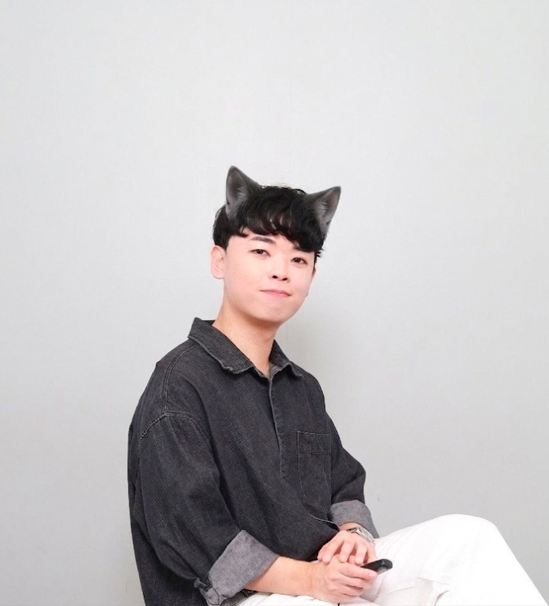

| 메이드 카페 2026 시즌 스태프 | |
| [ 펼치기 · 접기 ] | |
|
 |
|
| 단백질 루팡 No.1 | |
| 경훈냥이 Kyunghoon the Cat | |
| 출생 | 1999년 1~2월 추정 (와꾸는 98년생) 시드니(추정) 혹은 대한민국 |
| 국적 | 🇦🇺 대한민국 (한국어보다 영어가 유창함) |
| 신체 | 회색 트레이닝 바지 착용 불가[1], 훔친 단백질로 연명 중인 근육 |
| 직업 | 메이드 카페 서빙 및 응대 스태프 |
| 주요 관계 | 여은혁 (10년 지기 악우이자 단백질 최대 피해자) |
| 별명 | 단백질 괴도 루팡, 패션 헬창, 롤 탈주닌자, 황금 고블린, 워터파크 |
대한민국의 인물이자 자칭 메이드 카페의 헬스돌. 액면가는 빼도 박도 못하는 1998년생이지만 본인은 죽어도 '빠른 99년생'이라 주장하며 족보를 어지럽히는 족보 브레이커다.
최근에는 헬스에 심취하여 인스타그램에 운동 인증샷을 도배하고 있으나, 과거 메이드 카페 시절부터 주변 남성 지인들의 '단백질'을 상습적으로 착취해왔던 어두운 과거가 폭로되면서 '단백질 괴도 루팡'이라는 악명을 떨치고 있다.
놀랍게도 현직 메이드 카페 직원이다. 손님 앞에서는 유창한 버터 발음으로 "오이시쿠나레~"를 외치며 오므라이스에 케첩을 뿌리지만, 뒤에서는 남의 단백질 쉐이크를 흡입하며 근육을 키우는 이중생활을 이어가고 있다.
여은혁과는 10년이 넘는 세월 동안 기행을 주고받은 영혼의 악우이다.
여은혁이 그가 일하는 메이드 카페의 'VIP 단골손님'으로 출석 도장을 찍으며 급격히 친해졌다. 둘이 고양이 귀를 쓰고 찍은 스티커 사진은 이미 지인들의 카톡방 공공재가 되었다. 또한 여은혁은 경훈냥이 단백질 절도 행각의 최대 피해자로, 닭가슴살을 살 때마다 삥을 뜯기고 있다.[2]
누가 봐도 98년생, 심하면 그 이상으로 보이는 비주얼을 가졌음에도 불구하고 본인은 "나 빠른 99야"라며 억지 주장을 펼치고 있다. 정작 98년생 친구들에게는 꼬박꼬박 반말을 하는 하극상을 보여, 친구들은 "도대체 얼마나 빠른지 트랙에서 48시간 동안 쉬지 않고 달리기 시켜보고 싶다"며 분통을 터뜨리고 있다.[3]
인스타그램 스토리에 '#오운완', 거울 셀카를 도배 중이나, 그 화려한 근육 뒤에는 주변 남성 지인들의 '단백질'을 쫙 빼먹고 도망가던 추악한 과거가 숨겨져 있다.
동료 스태프나 남자 지인들의 보충제를 상습적으로 훔쳐 먹은 탓에, 피해 남성들은 하나같이 "경훈이만 만나고 오면 온몸에 힘이 다 빠져서 다리가 풀린다", "내 단백질을 다 빨아먹고 도망갔다"며 극심한 체력 저하를 호소하고 있다.[4]
입버릇처럼 "지린다"는 말을 달고 살더니, 실제로도 통제력을 상실하고 지리는 것이 아니냐는 충격적인 의혹이 제기되었다. 수분이 묻으면 색이 변하는 회색 트레이닝 바지를 절대 입지 못하는 치명적인 약점이 포착되면서 사실상 요실금 환자로 굳어졌다.[5]
호기롭게 1대1 미드빵을 신청했다가, 처참하게 털리고 넥서스가 터지자마자 게임을 강제 종료한 후 롤판에서 완전히 자취를 감추었다.
단톡방에서 "야 오늘 술 빨자"라며 어그로를 끌지만, 자리에 여성이 동석한다는 소식이 들려야만 비로소 나타나는 전형적인 '선택적 여미새형 주폭'이다.
여행을 갈 때 옷이나 세면도구 없이 캐리어 전체를 술병으로 꽉 채워오는 기행을 저질렀다. 친구들 사이에서 '지나가다 한 대 치면 술을 드랍하는 황금 고블린'으로 지정되었다.
음악적 열정을 핑계로 통기타를 잡더니, 얼마 지나지 않아 실제로 기타로 여자를 만나는 데 성공하며 그 불순한 야망을 실현했다.
[1] 착용 시 사회적 매장을 피할 수 없다는 소견이 있다.
[2] 당시 여은혁은 "내 닭가슴살에 손대면 용의 브레스를 뿜겠다"며 극대노했다.
[3] 48시간을 뛰어도 98년생의 벽을 넘을 순 없다.
[4] 물론 진짜 '보충제' 이야기다. 이상한 상상은 하지 말자.
[5] 지인들은 그가 '지린다'를 외칠 때마다 자동으로 1미터씩 뒤로 물러서는 반사신경을 기르게 되었다.